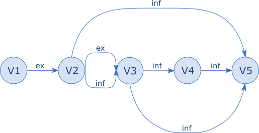
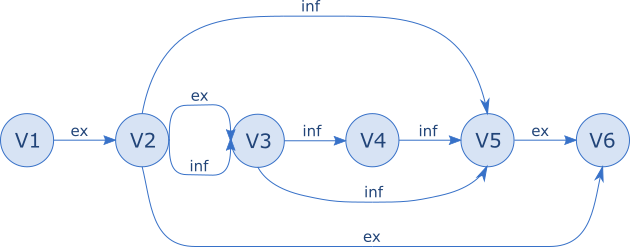

User Guide
This document assumes you are a developer using Core Data and you are interested in supporting store migration from different model versions. If that’s not you, read some more background information.
This library provides optimal multi-step Core Data store migration. Here’s an example diagram of an app’s model version history, where each circle is a deployed model version:

V5 is our latest version; the user could have any of V1-V4 on their device when they install V5.
The inf lines show where Core Data can infer a mapping. The ex lines show where the developer has supplied an explicit mapping model. Note the migration from V2 to V3 is inferrable and the developer has also supplied an explicit mapping model.
This library builds the graph of data and mapping models, then analyzes it to find the shortest valid path. Shortest means the fewest migrations. Valid means ‘prefer explicit mappings to inferred ones, even if the path is longer’.
So the migration paths generated for each possible starting point are:
- V1: V1-ex-V2, V2-ex-V3, V3-inf-V5
- V2: V2-ex-V3, V3-inf-V5 (even though V2-inf-V5 exists, it is not taken because that skips an explicit mapping)
- V3: V3-inf-V5 (no reason not to skip V4)
- V4: V4-inf-V5
In the next version of our example app, V6, the developer writes an explicit mapping model to upgrade the stores from V5. To improve the experience of the large number of users running V2 of the app the developer provides a further mapping model from V2 to V6:

The library now generates migration paths:
- V1: V1-ex-V2, V2-ex-V6
- V2: V2-ex-V6
- V3: V3-inf-V5, V5-ex-V6
- V4: V4-inf-V5, V5-ex-V6
- V5: V5-ex-V6
The library is happy to take the explicit V2-V6 mapping even though that skips other explicit mappings.
The rest of this document describes how to configure the container, what happens during store load, and some limitations.
Creating the container
To start using the library replace references to NSPersistentContainerNSPersistentContainer
with PersistentContainerPersistentContainer and references to NSPersistentCloudKitContainerNSPersistentCloudKitContainer
with PersistentCloudKitContainerPersistentCloudKitContainer. The initializers are compatible though they
have additional optional parameters. See PersistentContainerPersistentContainer.
Describing the valid migrations
The modelVersionOrder parameter tells the library what migrations are valid
by reference to the names of each model version. The name of a model version
refers to the part of the model filename before ‘.xcdatamodeld’. The main
options to describe the order are:
compare establishes an order of versions by simply comparing their names,
interpreting numbers like a human. This means that MyModel_V2 precedes
MyModel_V10. A migration is permitted if the source version name precedes
that of the destination. This is the default option.
patternMatchCompare matches each version name against a regular expression
pattern and interprets the result using the compare algorithm. For example if
your model versions are Mod_812_V1, Mod_118_V2, and Mod_21_V3 then you can
use .patternMatchCompare("_V.*$") to get the right result.
list supplies an explicit order of model versions. A migration is
permitted if the source version occurs earlier in the list than the destination.
For example .list(["FirstVer", "SecondVer", "ThirdVer"]).
pairList supplies an explicit list of migrations that are permitted. For
example .pairList([("FirstVer", "SecondVer"), ("SecondVer", "ThirdVer")]).
Note that this has a different meaning to the list example which permits a
migration from ‘FirstVer’ directly to ‘ThirdVer’.
See ModelVersionOrder.
Finding data and mapping models
The bundles parameter controls the set of bundles searched for data models
and mapping models. The default is ‘just the main bundle’.
The library looks for data models anywhere in the supplied bundles, but it only finds mapping models that are in the top level of a bundle – will address this at some point.
Registering for logging
The logMessageHandler parameter is an optional closure that if set is passed
logging messages from the library on any queue. If your app maintains a text
log as part of its debug strategy then you may wish to include messages of at
least level .error and .warning.
As long as you are not too pressed for space it would be worth including the
.info level as well – somewhat verbose during actual migrations but these are
rare.
The .debug level is for interest/library debugging/problem reporting.
See LogMessage.
Loading the stores
This section describes what happens during
PersistentContainer.loadPersistentStores(...)-[PersistentContainer loadPersistentStoresWithCompletionHandler:]. Briefly, the library attempts
the migration work, one store at a time. If this all succeeds then it invokes
Core Data to load the migrated stores and return control to the client.
Store types
Stores without a URL in their NSPersistentStoreDescriptionNSPersistentStoreDescription are ignored, as
are stores with a URL that is not a file:// URL. All other store types are
processed. The library has been tested extensively with NSSQLiteStoreTypeNSSQLiteStoreType
and somewhat with NSBinaryStoreTypeNSBinaryStoreType.
NSPersistentStoreDescription flags
These flags are present in the Apple implementation but are undocumented as far as I can tell. In this library:
shouldAddStoreAsynchronously – if any of the stores being added have this
set to true then all store loading proceeds asynchronously: the routine
returns immediately and store migration and loading occur on a background queue.
shouldMigrateStoreAutomatically – if this is false then the library does
not attempt to process the store at all.
shouldInferMappingModelAutomatically – if this is true then the library
allows inferred mappings to be used during migration. Otherwise only explicit
mapping models created in Xcode are used.
Using the delegate to track migrations
An implementation of the MigrationDelegate protocol may be assigned to
PersistentContainer.migrationDelegate.
Delegate calls are used to inform the client of migration progress. This can be used for debug or to update some user-visible progress indicator.
In particular .persistentContainer(_:willMigrateStore:...)
indicates how many single migrations will be performed, and
.persistentContainer(_:willSingleMigrateStore:...) indicates
progress through these as well as supplying the NSMigrationManagerNSMigrationManager for
client use.
Delegate method calls are made on the queue that is performing the migration.
This depends on NSPersistentStoreDescription.shouldAddStoreAsynchronouslyNSPersistentStoreDescription.shouldAddStoreAsynchronously,
see above.
See MigrationDelegate.
Error reporting
If the library finds a problem during migration then it invokes the client
completion handler passed to loadPersistentStores. The errors that can be
reported include various from Foundation and Core Data, as well as several
specific to this library described in MigrationError.
Working with multiple stores
The library attempts to migrate multiple stores atomically. Specifically, all stores are first migrated into temporary files. Only when all the stores have been migrated successfully are they allowed to replace the ‘real’ stores.
This means that if there is a problem with migration for a particular store, then all stores are left at a consistent old version. In theory this makes it easier to retain access to user data.
The library does not do anything special to deal with application crashes, device power loss, or filesystem errors during store replacement so does not guarantee atomicity.
A consequence of this approach is that a store may fail to load with an error
of MigrationError.coreqMigrationFailed(_). This means that although this
particular store went through its migration process without problem, the
migration of another store in the same container did have a problem. To keep
all the stores at a consistent version, neither store has been allowed to
upgrade.
Limitations
The main ones of which I am aware at any rate….
-
Mapping models are limited to just one per migration. Need to support multiple as a way of limiting footprint. In the same vein need to permit user-managed migrations as well.
-
No support for merged models – that is an
NSManagedObjectModelNSManagedObjectModelthat has been created by merging together several on-disk data models. I have a scheme for supporting this, just not sure how much real-world use this sees. -
Untested with custom stores; testing on tvOS and watchOS has been simulator-only.